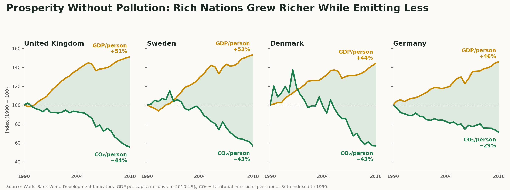
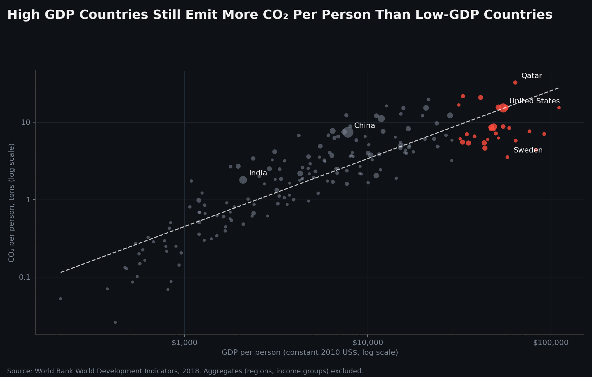

Proposition: Rich countries have separated economic growth from carbon emissions.
FOR the Proposition

Design Decisions and Rationale:
- −1 Hand-picked countries with 1990 as a reference point. The visualization hand picks four countries that exhibit success stories in recent history. The index on the left axis is set to 100 in 1990, for both carbon and dollars, so that the reader can quickly see the scissor effect of rising GDP and falling emissions. The choice of 1990 is not arbitrary, as it is the baseline year used by the Kyoto Protocol. It is worth noting that the choice of countries and reference year is a form of cherry-picking, which could either be an honest exhibition of countries that represent proof of progress or a misleading selection of data. Here I believe it is likely a deceptive choice, as the audience may be led to believe that these four countries are representative of all rich countries, when in fact they are not. Alternatives considered: I rejected a random sample of rich countries because the mixed results blurred the message, and a later start year because 1990 has a policy justification (Kyoto) that makes it look principled.
- −1 Truncated y-axis, shaded gap, and direct end-labels. The y-axis runs from 30 to 160 rather than from 0 which exaggerates the visual difference. The gap is shaded to emphasize the difference between the two lines even further. Labels are placed directly on the end of the lines with percentage changes rather than absolute values, which emphasizes relative change over time. Alternatives considered: I rejected an axis starting at zero because it flattened both lines and made the divergence look modest, and I rejected plotting raw GDP and CO2 values because dollars and tonnes can't share an axis, which would hide the "scissor" shape.
- −0.5 Lighter colors The plots use lighter colors for the background, lines, and axes to try and make the chart feel more friendly and less serious. This is a subtle choice, but it makes the chart feel more persuasive of the hopeful proposition that emissions and GDP can be separated. Alternatives considered: I rejected a red or grey line for emissions because it framed the CO2 line as a threat rather than a success.
AGAINST the Proposition

Design Decisions and Rationale:
- −1.5 Answering a time question with a static snapshot. Separation of emissions and GDP could be interpreted as a change over time within countries, but our chart is a cross-country comparison. It shows that richer countries emit more per person in 2018, but ignores any temporal dynamics within countries. The reason for this is to use the point in time correlation as it is easy to interpret and to avoid the complexity of showing a time series for every country. Alternatives considered: I rejected a time series because it would have shown many rich countries' emissions falling which undercuts the argument this side is making.
- +1 Log–log axes and a fitted trend line. Income and emissions both span several orders of magnitude, so log scales are the right encoding, but it is still worth noting that the log axes compress the spread of the data to make the pattern look more law-like. The trend line is fitted to the log–log data, which is a reasonable choice, but it is not the same as fitting a line to the raw data. Alternatives considered: I rejected linear axes because almost every country collapsed into the bottom-left corner, making the chart unreadable.
- −0.5 Fearful colors, an arbitrary $30k cut-off, and bubble size without a legend. The dark background with red highlights signals danger without needing to read the text. "Rich" is defined by a $30,000 GDP-per-person threshold that is chosen to make the red cluster of countries look distinct from the rest of the data (which could be considered deceptive). Bubble size is used to show total emissions, but the legend is omitted so the reader cannot interpret the scale of the bubbles. Alternatives considered: I rejected the World Bank's own high-income classification because its boundary did not separate as clean a cluster, and a size legend because it added clutter without strengthening the argument.
- −1 Title framing and labelled countries. The title is accurate for 2018, but it frames a single-year snapshot as a lasting rule rather than a temporary observation. Labelling the United States, Qatar and China draws the eye to the largest emitters. Alternatives considered: I rejected a neutral title such as "GDP and CO2 per Person, 2018" because it would not have been persuasive of the argument.
Final Reflection
What surprised me most was that I never altered a single value in the data, yet I could make a persuasive argument for two very different perspectives. Selection, scaling, and framing did all of the work. I believe the implication is that two opposing arguments can organically arise from the same dataset, and that the ethical burden of a designer is to consider the truthfulness of the argument they are making, not just the techniques they use to make it. And along those lines, it is very easy for designers to accidentally mislead their audience, even when they are trying to be honest.
The true difficulty of this assignment was finding ways to make the two visualizations simple and acceptable for the audience. Finding the blurry line between persuasive and misleading was a challenge, and I found myself questioning if the choices I made were ethical or not. Especially for the "for" visualization, I struggle to discern if limiting the data to 1990 and picking the four countries was a fair exhibition of progress or a misleading cherry-pick. I also struggled with the "against" visualization, as I wanted to show how the most recent data shows that richer countries clearly emit more per capita, but it ignores progress over time. So I found myself in a position where I was trying to make the two persuasive visualizations as fair and honest as possible, but I was still left with a nagging feeling that I was misleading the audience in some way.
I don't truly have a solution to this problem other than to avoid the clearly misleading techniques (manipulating data directly, or using misleading visual encodings), and to try to be as honest as possible with the data I have. If a claim for the data is inherently vague (such as separating growth from emissions), then I think it is the responsibility of the designer to make that clear to the audience, and to show both sides of the data if possible. I'd define a choice as misleading when the conclusion would change if the reader saw the obvious alternative (another start year, all countries) and the designer hid that alternative.